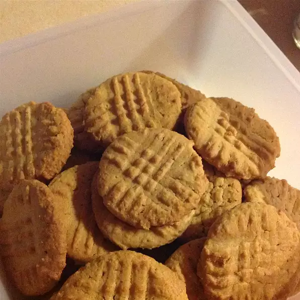

Peanut Butter Cookies

Description
Delicious peanut butter cookies just like grandma used to make.
Ingredients
- 1 1/4 c. creamy peanut butter
- 1 c. butter
- 3/4 c. white sugar
- 3/4 c. packed brown sugar
- 2 eggs
- 1/2 tsp. vanilla extract
- 2 1/4 c. all-purpose flour
- 1 tsp. baking powder
- 1 tsp. baking soda
Steps
- Preheat oven to 375 degrees F
- In a large bowl cream together the peanut butter, butter, and sugars
- Beat in the eggs and vanilla
- In another bowl, combine the flour, baking powder, and baking soda and stir into the peanut butter mixture.
- Form dough into walnut sized balls and place them 2 inches apart onto ungreased cookie sheets.
- Dip a fork into flour and criss cross each cookie to flatten slightly.
- Bake for 12 to 15 minutes until lightly browned. Allow cookies to cool for 5 minutes before serving.
Back To Home Page